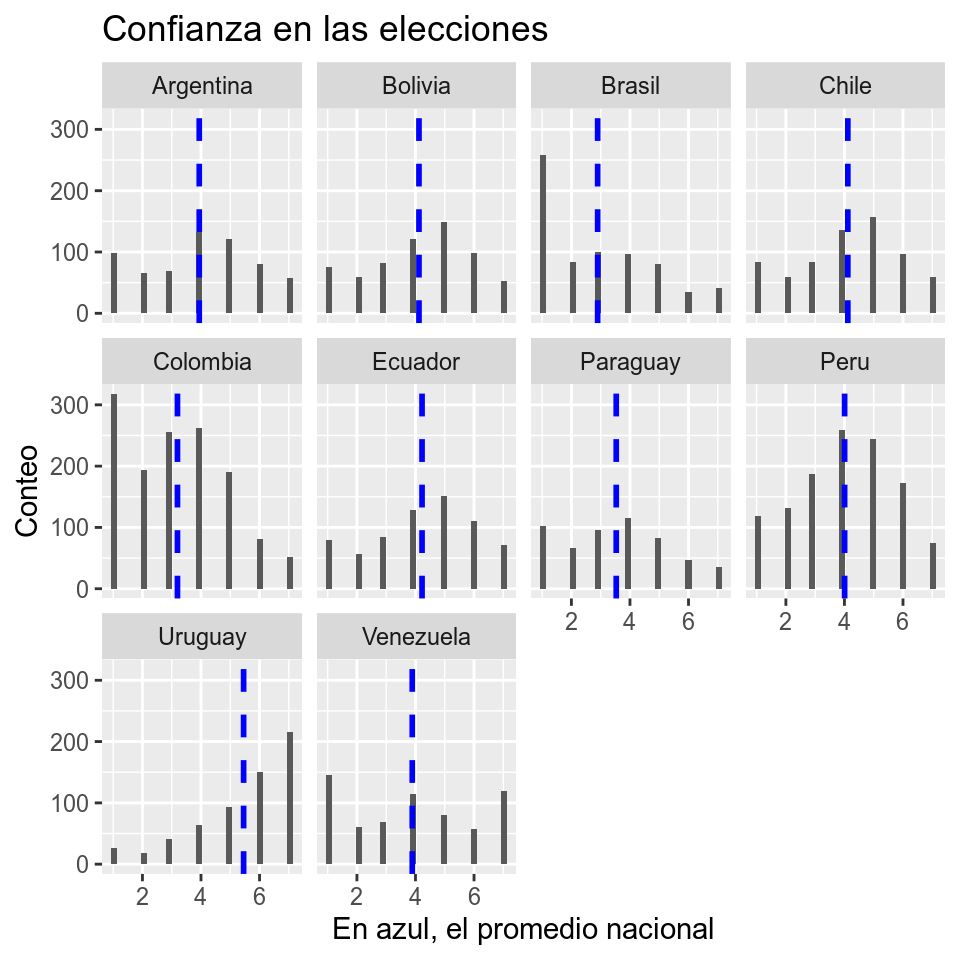
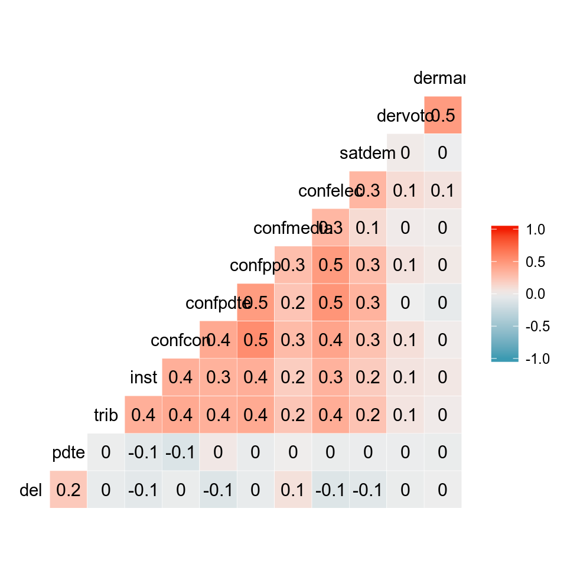
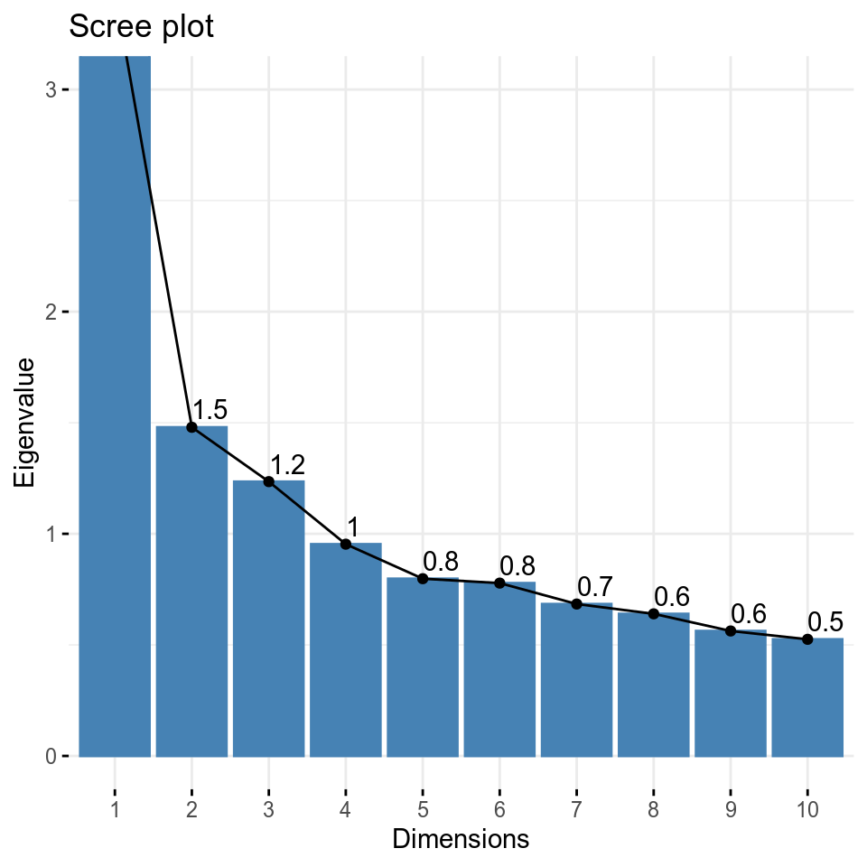
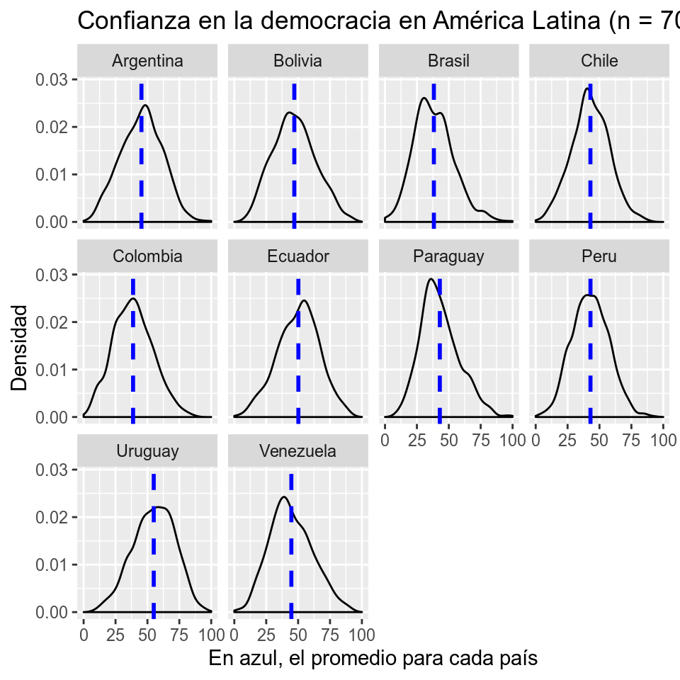

Capítulo 10 Creación de índices con PCA
Por Caterina Labrín y Francisco Urdinez
Lectura sugerida
Box-Steffensmeier, J. M., Brady, H. E., & Collier, D. (Eds.). (2008). The Oxford Handbook of Political Methodology (Vol. 10). Oxford University Press. Caps. 6 y 7: “Measurement” y “Typologies: Forming Concepts and Creating Categorical Variables”.
Goertz, G. (2006). Social science concepts: A user’s guide. Princeton University Press. Capítulo 4 “Increasing Concept-Measure Consistency”.
Abeyasekera, S. (2005). “Multivariate Methods for Index Construction.” In Household Sample Surveys and Transition Countries. 367-387. New York City: DESA/UNSD.
Miller, J. E. (2013). The Chicago guide to writing about multivariate analysis. University of Chicago Press. Cap. 15: “Speaking about Multivariate Analyses”.
Grimm, L. G., & Yarnold, P. R. (2000). Reading and understanding multivariate statistics. American Psychological Association. Cap. 7: “Assessing the validity of measure”.
Paquetes que tienes que tener instalados
FactoMineR,GGally,tidyverse.
10.1 Introducción
A esta altura del libro has visto suficientes herramientas para trabajar de buena forma con datos y conceptos de las ciencias sociales. En este capítulo en particular veremos cómo generar de forma simple, mediciones de conceptos complejos que muchas veces en ciencias sociales, sobre todo en ciencia política, queremos utilizar para generar hipótesis de mecanismos causales o simplemente visualizar cómo se comportan.
La relación entre guerra y democracia o de democracia y desarrollo son cosas que usualmente se estudian en ciencia política, pero estos conceptos a veces no están claramente definidos con anticipación o si es que lo están, no sabemos cuál de las definiciones nos pueda servir. Conceptos como terrorismo o populismo también son utilizados y entregados a la sociedad todos los días por políticos y periodistas, muchas veces de forma errada, manifestando que el problema no solo ocurre a nivel académico sino también en todo orden de cosas, generando niveles de desinformación bastante graves. Esta fragilidad de nuestros conceptos se torna aún más grave si tenemos que operacionalizar con datos, ya que muchas veces queremos medir conceptos complejos con indicadores que nos muestren las variaciones o relaciones con otros conceptos de forma más cuantitativa o visual.
Para ilustrar la situación, pongámonos en un caso hipotético: hagamos de cuenta que nos encontramos trabajando en un proyecto que entre otras cosas pide comparar que tan democráticos son los países latinoamericanos y poder visualizarlo de forma clara en una tabla o gráfico. Usualmente, en este caso buscaríamos algún indicador de democracia de los que V-dem o Freedom House nos entrega para todos los países latinoamericanos. Asumiríamos por práctica, que estos indicadores tienen validez evidente y fueron apropiadamente construidos en base a dimensiones claras. Nadie cuestionaría nuestra elección. Ahora, pensemos que nos piden o queremos investigar ahora sobre un concepto distinto y un poco más específico. De este no tenemos un indicador similar a los de democracia y debemos empezar de cero: ¿qué es lo que estamos midiendo? ¿cómo lo medimos? ¿qué datos ocupamos?
Frente a este problema, en este capítulo queremos presentar la utilidad que podría tener el Análisis de Componentes Principales (PCA) como una forma de poder generar las distintas dimensiones que componen un concepto abstracto a través de la reducción de distintos indicadores previamente elegidos. Esto principalmente para analizar cómo se compondría un concepto de este estilo y comprender lo que estamos analizando. Además, presentaremos algunas formas de operacionalizar los conceptos a través de índices que puedan mostrarnos la variabilidad de la medición entre distintas unidades de análisis, para compararlos o incluirlos dentro de un análisis más complejo.
10.1.1 Conceptos, mediciones y validez
Cuando construimos una medición empírica de un concepto abstracto, además de dar cuenta de su complejidad, queremos que sea válido (ver Grimm y Yarnold 2000 para un excelente resumen sobre diferentes tipos de validez). La validez de contenido es aquella que nos permite asegurarnos que el contenido de la medición corresponde a lo conceptualmente definido para esa medición. Esto debe realizarse cada vez que queramos generar un concepto a través de una revisión teórica que sitúe hasta donde llegará nuestro concepto, cuáles serán las partes que lo compondrán y principalmente qué variables utilizaremos para medirlas. Una adecuada revisión de literatura respecto al concepto en particular que estamos trabajando, que puede ser enmarcada en un marco teórico más grande, siempre será más que deseable a la hora de trabajar con conceptos abstractos y complejos.
La validez de constructo, que es la que particularmente nos importa aquí, refiere a que el concepto mida lo que dice medir. Esta validez siempre debe estar cuestionada, precisamente por lo que anteriormente decíamos de la complejidad de los conceptos con los que trabajamos. Por ejemplo, esto es muy frecuente con las mediciones que existen de democracia. Incluso cuando hemos avanzado enormemente como disciplina, y hoy disponemos de mediciones comparables entre países y a lo largo del tiempo, como Polity y Varieties of Democracy, ambos están sujetos a críticas sobre como miden la variable.
Hay dos formas, sin embargo, de ganar validez de constructo de nuestra variable de interés. La primera alternativa para obtener validez de constructo de nuestra variable es por medio de lo que se llama validez discriminativa, es decir que nuestro constructo no debería estar altamente correlacionado a variables que nuestro indicador no dice medir. Este concepto se puede ejemplificar bien con la forma en que V-Dem ha elegido crear su índice de democracia (al que llaman de poliarquía): como dice el nombre, lo que hacen es medir variedades de democracia a partir de diferentes dimensiones, a saber, las dimensiones liberal, participativa, deliberativa, electoral e igualitaria. Lo que esperaríamos es que cada una de ellas tenga baja correlación de manera que tengamos confianza en que verdaderamente capturan las diferentes aristas de este concepto multifacético.
La segunda alternativa es por validez convergente, es decir, la correlación que mi medida de interés tiene con medidas de otros. Por ejemplo, la democracia tal como la mide V-Dem tiene una correlación de 0.8 con la forma como la mide Polity. Si yo creo una tercera medición, cuya correlación es de 0.70 con Polity y 0.9 con V-Dem podré estar confiado en que las tres variables están aproximándose de manera similar a la variable latente.
Es importante definir anteriormente de forma general cuales van a ser los lineamientos que guiarán los conceptos que definiremos en relación tanto a si su construcción tiene una teoría que lo respalde como en si los indicadores dicen medir lo que están midiendo. La herramienta del análisis de componentes principales (PCA por sus siglas en inglés) nos ayuda a definir en base a un set de datos que teóricamente creemos que son importantes para el concepto que queremos representar, cual combinación de ellos representa mejor a dicho concepto.
10.2 Análisis de Componentes Principales
El análisis de componentes principales (PCA) es una técnica muy útil a la hora de combinar distintas variables. Al elegir previamente las variables que se ocuparán, la técnica de PCA nos entrega distintos “componentes”, que son la reducción de la dimensionalidad de un conjunto de datos multivariados y que intentan retener la mayor cantidad posible de la variación original. Consiste literalmente en trabajar con la correlación entre las variables, y dar cuenta de lo que ellas miden en común y lo que cada una mide individualmente que las otras variables no capturan.
El PCA al incluir todas las variables, nos entregará un número de componentes igual a la cantidad de variables pero que, a su vez, contendrán en cierta medida, a todas las variables, aunque destacarán algunas que serán las variables que guiarán la variabilidad de cada componente. Además de una reducción de las otras variables que se utilizaron, un componente puede ser considerado como una variable nueva con la que se puede trabajar, que puede representar una dimensión de un concepto mas complejo.
Esta variable también vendrá con un Eigenvalue, que indica que tanta varianza tienen las variables que generan el componente y cuanto porcentaje de variabilidad explica. El Eigenvalue ordena los componentes desde aquel que tiene mayor varianza en su interior (es decir, el Componente Principal) hasta aquellos que contienen menor dispersión, que serán muchas veces despreciables. Un Eigenvalue > 1 indica que representa mayor varianza que una variable de las que contiene el componente, por lo que vamos a querer quedarnos siempre con aquellos componentes que varíen mas que una variable, es decir, que cumplan con esta regla.
La creación de distintos componentes a través de PCA nos entrega varias que fácilmente podemos utilizar con R, de las cuales hemos elegido, por su utilidad y sencillez, dos: poder conocer una forma de visualizar cómo está construido nuestro concepto a través de la dimensionalidad de los componentes principales; y poder generar un índice que, con los componentes más importantes, pueda representar la variación del concepto que intentamos medir, entre distintas unidades de análisis. Ahora entregaremos un ejemplo aplicado para ambos instrumentos.
10.3 Aplicación en R
En América Latina, dado el pasado de gobiernos dictatoriales y el reciente debilitamiento democrático de muchos países, puede ser importante para una posible investigación, considerar la opinión pública sobre las instituciones de sus propios países. Una buena pregunta para hacerse es ¿cómo poder saber cuál es la opinión que los ciudadanos latinoamericanos tienen respecto a las instituciones democráticas de sus países?
El Proyecto de Opinión Pública de América Latina (LAPOP en inglés) – es coordinado desde la Universidad de Vanderbilt y está especializado en conducir estudios de evaluación de impacto, y producir reportes acerca de las actitudes, evaluaciones y experiencias de los individuos de países latinoamericanos. Este proyecto pone a disposición de los investigadores distintas preguntas que, en su conjunto, podrían ayudarnos a aproximar cuanta confianza existe en la región con respecto a instituciones democráticas del país correspondiente a cada individuo.
Ejercicios antes de continuar con el capítulo
Asumamos que te solicitan medir el antiamericanismo en Latinoamerica. ¿Cómo medirías este concepto? Elige 5 o más preguntas de la encuesta LAPOP (puedes consultar el codebook aquí) que ocuparías para medir el antiamericanismo.
Es importante como primer paso seleccionar las variables que nos servirán para realizar el PCA, dejando de lado todo aquello que no queramos usar en el índice final. Esta data contiene doce preguntas de la encuesta de LAPOP, realizadas a una selección de cerca de 7000 personas en 10 países latinoamericanos. El cuestionario entero puede accederse en este [link] (https://www.vanderbilt.edu/lapop/ab2016/AB2017-v18.0-Spa-170202_W.pdf). Este primer paso es fundamental. Este es el paso que conlleva más trabajo teórico para el investigador, ya que desde aquí se definen cuáles serán las variables que se integrarán en el análisis (y cuales se dejarán fuera). Bajo nuestro análisis, las variables que dejamos son las siguientes:
| Nombre | Descripción | Fuente |
|---|---|---|
| del | Variable dicotómica que mide el nivel de justificación de golpes de estado militares en el país del encuestado frente a mucha delincuencia. | Basada en la pregunta “jc10” de Encuesta LAPOP. |
| pdte | Variable dicotómica que mide el nivel de justificación de cierre del congreso en situaciones difíciles por parte del presidente. | Basada en la pregunta “jc15a” de Encuesta LAPOP. |
| trib | Mide en una escala del 1 al 7 el nivel de confianza en los tribunales del país del encuestado | Basada en la pregunta “b1” de Encuesta LAPOP. |
| inst | Mide en una escala del 1 al 7 el nivel de respeto por las instituciones políticas del país del encuestado. | Basada en la pregunta “b2” de Encuesta LAPOP. |
| confcon | Mide en una escala del 1 al 7 el nivel de confianza en el Congreso Nacional (poder legislativo) del país del encuestado | Basada en la pregunta “b13” de Encuesta LAPOP. |
| confpdte | Mide en una escala del 1 al 7 el nivel de confianza en el presidente (poder ejecutivo) del país del encuestado | Basada en la pregunta “b21a” de Encuesta LAPOP. |
| confpp | Mide en una escala del 1 al 7 el nivel de confianza en los partidos políticos del país del encuestado | Basada en la pregunta “b21” de Encuesta LAPOP. |
| confmedia | Mide en una escala del 1 al 7 el nivel de confianza en los medios de comunicación del país del encuestado | Basada en la pregunta “b37” de Encuesta LAPOP. |
| confelec | Mide en una escala del 1 al 7 el nivel de confianza en las elecciones del país del encuestado. | Basada en la pregunta “b47a” de Encuesta LAPOP. |
| satdem | Variable dicotómica que mide el nivel de satisfacción con la democracia tienen los encuestados | Basada en la pregunta “pn4” de Encuesta LAPOP. |
| dervoto | Mide en una escala del 1 al 7 la satisfacción con la idea de que aquellos que se encuentren en contra del gobierno de turno puedan ejercer el voto en las elecciones del país del encuestado | Basada en la pregunta “d1” de Encuesta LAPOP. |
| derman | Mide en una escala del 1 al 7 la satisfacción con la idea de que aquellos que se encuentren en contra del gobierno de turno puedan llevar a cabo manifestaciones pacíficas para expresar su punto de vista | Basada en la pregunta “d2” de Encuesta LAPOP. |
Para poder seleccionar las variables y utilizar los pipes cargamos tidyverse. Luego, cargamos la base desde el paquete del libro, paqueteadp.
## Warning: Missing column names filled in: 'X1' [1]Estas variables pueden explorarse gráficamente. Por ejemplo, podemos ver por país la confianza que sus ciudadanos tienen en las elecciones:
lapop_pca <- lapop_pca %>%
group_by(paisnom) %>%
mutate(confelec_prom = mean(confelec)) %>%
ungroup()
ggplot(lapop_pca, aes(x = confelec)) +
geom_histogram() +
labs(title = "Confianza en las elecciones",
x = "En azul, el promedio nacional", y = "Conteo")+
facet_wrap(~paisnom) +
geom_vline(aes(xintercept = confelec_prom),
color = "blue", linetype = "dashed", size = 1)
Vamos a filtrar nuestras variables de interés, esto quiere decir que dejamos fuera toda variable que no sea proxy de democracia, por ejemplo la variable paisnom que indica el país de cada individuo no debería ser incorporada. Para esto, generamos una nueva base que contenga sólo las variables que queramos ocupar, en este caso, para conocer cuál es la opinión sobre las instituciones democráticas que tienen los latinoamericanos. Con stargazer podemos ver los estadísticos descriptivos de cada variable.
lapop_pca_num <- lapop_pca %>%
select(del, pdte, trib, inst, confcon, confpdte, confpp, confmedia, confelec,
satdem, dervoto, derman) %>%
mutate_all(as.numeric)
lapop_pca
## # A tibble: 7,655 x 14
## paisnom del pdte trib inst confcon confpdte confpp confmedia confelec
## <chr> <dbl> <dbl> <dbl> <dbl> <dbl> <dbl> <dbl> <dbl> <dbl>
## 1 Argent… 0 1 6 4 6 5 3 4 6
## 2 Argent… 1 0 4 6 5 1 1 6 3
## 3 Argent… 0 0 4 4 2 6 3 6 4
## 4 Argent… 1 1 3 7 4 1 2 4 3
## 5 Argent… 0 0 5 6 4 3 3 5 5
## 6 Argent… 0 0 2 1 1 2 1 2 1
## 7 Argent… 0 0 4 2 4 1 3 4 7
## 8 Argent… 1 0 1 1 1 1 1 7 1
## 9 Argent… 1 1 5 7 7 5 7 7 6
## 10 Argent… 0 0 2 7 1 3 1 4 5
## # … with 7,645 more rows, and 4 more variables: satdem <dbl>, dervoto <dbl>,
## # derman <dbl>, confelec_prom <dbl>Ya habiendo seleccionado las variables, el primer paso es estandarizarlas y luego tratar los valores negativos. La técnica del PCA acepta variables de distinto tipo, pero importa bastanta omitir o imputar a las medias los valores nulos que toman. En este caso, omitiremos los posibles NA que tenga la base.
El siguiente paso es observar la correlación entre ellas. Esto sirve también para saber cómo se relacionan las variables elegidas, y además para ver si hay correlaciones extremadamente altas entre dos o más variables ya que si existe el caso en que tengamos dos o más variables con alta correlación entre ellas, éstas tendrán enorme influencia en sobre cómo se orientan los componentes.
La mejor alternativa para observar correlación entre variables creemos que es con el paquete GGally. A mayor intensidad del color, más fuerte la correlación. En azul tendremos correlaciones negativas, y en rojo correlaciones positivas.

Lo que vemos es que las variables sobre confianza están correlacionadas de manera positiva. Es decir, quien confía en el presidente tiende a confiar también en medios, elecciones, por ejemplo.
Una vez que observamos las correlaciones, estamos listos para realizar el Análisis de Componentes Principales. La idea entonces es explicar dos grandes utilidades complementarias que tiene para las ciencias sociales y la construcción de algún concepto. Para esto, ocuparemos dos paquetes distintos que realizan el PCA, esto para otorgar opciones de cómo realizar la técnica en R. El PCA nos permitirá definir a través de los componentes cuales van a ser las dimensiones del concepto que ocuparemos a través de cómo se relacionan los datos en su interior, para luego avanzar a realizar un índice simple que denote la variación del concepto a través de distintas unidades de análisis.
10.4 Dimensionalidad del concepto
Primero, con el subset de datos que tenemos, generamos un PCA con el paquete stats. Luego con el comando summary podremos ver lo que nos entrega el análisis.
library(stats)
pca <- princomp(lapop_pca_num)
summary(pca, loadings = T, cutoff = 0.3)
## Importance of components:
## Comp.1 Comp.2 Comp.3 Comp.4 Comp.5 Comp.6 Comp.7 Comp.8
## Comp.9 Comp.10 Comp.11 Comp.12
## [ reached getOption("max.print") -- omitted 3 rows ]
##
## Loadings:
## Comp.1 Comp.2 Comp.3 Comp.4 Comp.5 Comp.6 Comp.7 Comp.8 Comp.9
## Comp.10 Comp.11 Comp.12
## [ reached getOption("max.print") -- omitted 12 rows ]Como puede verse, existen tres componentes que nos entregan un Eigenvalue (denotado por Standard deviation) mayor a 1. Como mencionamos con anterioridad, ese será nuestro criterio para seleccionar los componentes que consideraremos como importantes. También nos entrega cómo se construyen cada componente con las variables que seleccionamos.
Otra forma de observar los Eigenvalues de cada componente es con el comando get_eigenvalue de la librería factoextra. Al igual que con el resultado de summary(), nos entrega, además del Eigenvalue, la varianza que explica cada componente.
library(factoextra)
eig_val <- get_eigenvalue(pca)
eig_val
## eigenvalue variance.percent cumulative.variance.percent
## Dim.1 3.4 29 29
## Dim.2 1.5 12 41
## [ reached 'max' / getOption("max.print") -- omitted 10 rows ]Como puede verse, el componente 1 representa cerca del 29% de la varianza total de las variables elegidas. La varianza de los otros dos componentes importantes es de un 12% y 10% respectivamente.
Otra forma de que nos entregue esta información es a través de gráficos. El siguiente comando nos entrega en su forma mas simple, el porcentaje de varianza explicado por cada uno de los componentes que el PCA nos entrega.

Un cambio pequeño en el comando, nos entrega también un gráfico con los Eigenvalues de cada uno de los componentes:

Para saber cómo se encuentran compuestos cada uno de estos componentes, podemos generar un Biplot. Este tipo de gráficos nos mostrará como vectores en dos dimensiones (que serán los primeros dos componentes del análisis).

Este gráfico bidimensional nos muestra claramente que tenemos tres grupos de variables. Estos conjuntos de variables son los que precisamente son reducidos a tres componentes, que pueden representar a tres dimensiones de la opinión sobre instituciones políticas que queremos medir en Latinoamérica.
Podemos saber también, cómo estarán compuestas las dimensiones del concepto que queremos medir con el comando fviz_contrib, cambiando los componentes en cada eje:
fviz_contrib(pca, choice = "var", axes = 1, top = 10)
fviz_contrib(pca, choice = "var", axes = 2, top = 10)
fviz_contrib(pca, choice = "var", axes = 3, top = 10)


Por ejemplo, el primer componente es el más diverso pero se alimenta en gran medida de las variables de confianza. Si recuerdas la matriz de correlación que hicimos con GGally, todas estas variables tenían correlaciones altas entre sí. El segundo componente se alimenta de la correlación fuerte entre derman y dervoto. La línea roja punteada nos expresa el valor que asumiría un escenario en el que todas las variables contribuyen en igual medida, es decir 1/12 (8.33%), y nos sirve apenas como referencia visual.
La composición de cada componente, nos puede ayudar a nombrar cada dimensión del concepto que estamos creando. Esto entregará más sustento a la hora de justificar la forma de medir la opinión pública orientada hacia las instituciones políticas.
La primera dimensión, que es aquella que concentra la mayor cantidad de varianza, representa la confianza en instituciones como lo son los poderes del estado, los partidos políticos y las elecciones. Es el más diverso pero se alimenta en gran medida de las variables de confianza. Si recuerdas la matriz de correlación que hicimos con GGally, todas estas variables tenían correlaciones altas entre sí. Esto quiere decir que cuando queramos medir la confianza en la política de los individuos, lo que principalmente representarán nuestros datos es aquella confianza en la política más formal, en el concepto más clásico de política.
La segunda de las dimensiones es aquella que denota el nivel de tolerancia política con la disidencia, que podría orientar una opinión hacia una forma de controlar los derechos a voto y manifestación pública pacífica. Esto puede denotar que tan propensa es la gente a suspender ciertos derechos democráticos de aquellos que piensan distinto.
La tercera de las dimensiones, que representa el 10% de la varianza, es aquella compuesta por variables que representan la propensión a justificar golpes de estado o cierres de Congreso. Nuestro concepto entonces tendrá componentes que miden que tanto individualmente se forman opiniones de quiebres democráticos, midiendo que tan frágiles son instituciones formales dentro de la opinión pública en Latinoamérica.
Los resultados cualitativos de cada dimensión pueden ser representados en una tabla como esta:
| Dimensión 1 | Dimensión 2 | Dimensión 3 |
|---|---|---|
| Política Formal | Derechos Democráticos | Justificación Antidemocrática |
| trib | dervoto | del |
| inst | derman | pdte |
| confcon | ||
| confpdte | ||
| confpp | ||
| confelec | ||
| 28.7% | 12.3% | 10.3% |
| de la varianza explicada | de la varianza explicada | de la varianza explicada |
Al crearse estas nuevas dimensiones, estas pueden ser consideradas como nuevas variables a integrar dentro de nuestra base de datos original, como se ve a continuación:
Estas pueden ser tratadas como variables nuevas que se puedan integrar por separado al análisis o, como veremos a continuación, ser integrados en un índice de confianza en instituciones políticas, que evalúe en su conjunto, las tres dimensiones.
Ejercicios antes de continuar con el capítulo
Estandariza y omite los NA de las preguntas que elegiste en la primera parte para el nivel de antiamericanismo. Realiza un Análisis de Componentes Principales y responde las siguientes preguntas: ¿Cuáles son los componentes más importantes? ¿Qué variables los integran? ¿Qué dimensiones tiene el concepto de antiamericanismo que estás realizando?
10.5 Variación del concepto
Otra de las aplicaciones de esta herramienta en R permitirá generar un índice que caracterice a cada uno de los individuos desde aquellos que sean más propensos a tener confianza en las instituciones y aquellos que no. A partir de este índice individual, luego podremos hacer una gran variedad de estudios, desde comparaciones entre países, a comparaciones por edad, género, renta u otra variable de interés.
Para esta parte, volveremos a generar un PCA, pero esta vez lo haremos con el comando PCA del paquete FactoMineR. Esto nos entregará el mismo resultado que el paquete anterior, pero nos interesa mostrar que esta herramienta puede ser ocupada de varias formas el R.
Como vimos con anterioridad, debemos retener los componentes que contienen un Eigen Value mayor a 1, lo que podemos ver nuevamente en el gráfico:

Como pudimos ver con anticipación, los componentes mayores a 1 son los primeros tres. Dejaremos en este caso al componente 4 para agregar mayores variables a nuestro índice.
Para poder condensar los componentes elegidos en una sola variable es necesario recordar cuanta varianza acumulada representan del total:
eig <- get_eig(pca_1)
eig
## eigenvalue variance.percent cumulative.variance.percent
## Dim.1 3.44 28.7 29
## Dim.2 1.48 12.3 41
## [ reached getOption("max.print") -- omitted 10 rows ]Habíamos visto que los cuatro componentes representaban casi 60% de la varianza total: El primer componente un 28.7%, el segundo componente un 12.3%, el tercer componente un 10.3% y el cuarto componente un 7.9%. El siguiente paso consiste en sumar estos cuatro componentes, pero ponderando cada uno por el porcentaje de la varianza que representan. Lo hacemos de la siguiente forma:
data_pca <- pca_1$ind$coord%>%
as_tibble() %>%
mutate(pca_01 = (Dim.1 * 28.7 + Dim.2 * 12.3 + Dim.3 * 10.3 + Dim.4 * 7.9) / 60)
lapop_pca <- bind_cols(lapop_pca, data_pca %>% select(pca_01))De esta forma, hemos creado una única variable, que llamamos pca_01. ¡Estamos muy cerca de que esta variable sea nuestro indicador de valoración de la democracia! Sucede que la variable pca_01 está en una escala poco amigable. Idealmente queremos que nuestro indicador oscile de 0 a 1, de 0 a 10, o 0 a 100 de tal forma que sea más fácil su interpretación. Lo haremos para que sea de 0 a 100, si quieres que sea de 0 a 10 o de 0 a 1 tienes que reemplazar el 100 de la formula a continuación por el número que te interese.
lapop_pca <- lapop_pca %>%
mutate(democracy_index = rescale01(pca_01) * 100)%>%
select(democracy_index, everything())Ya con nuestro nuevo índice reescalado, podemos ver cómo se ve su densidad:
index_density <- ggplot(data = lapop_pca,
mapping = aes(x = democracy_index)) +
labs(x ="Índice de confianza en la democracia", y = "Densidad") +
geom_density()
index_density 
Ahora que tenemos el índice listo, podemos hacer todo tipo de análisis. Por ejemplo, podemos hacer comparación por países. Si tuviéramos variables individuales, podríamos proceder a modelos de regresión con controles por género, ideología, renta, nivel educativo. Para ello, puedes usar lo aprendido en los capítulos 7 y 8.
Descriptivamente, podemos hacer una comparación de cómo se encuentra nuestro índice de confianza en instituciones en los países latinoamericanos:
lapop_pca <- lapop_pca %>%
group_by(paisnom) %>%
mutate(democracy_avg = mean(democracy_index)) %>%
ungroup()
ggplot(lapop_pca, aes(x = democracy_index)) +
geom_density() +
labs(title = "Confianza en la democracia en América Latina (n = 7000)",
x = "En azul, el promedio para cada país",
y = "Densidad")+
facet_wrap(~paisnom) +
geom_vline(aes(xintercept = democracy_avg),
color = "blue", linetype = "dashed", size = 1)
Ejercicios antes de continuar al próximo capítulo
- Utilizando el índice de confianza en la democracia en América Latina que acabamos de crear, analice con modelos de regresion lineales que variables tienen alto poder explicativo sobre esta variable ¿Son la ideología, renta o edad variables importantes?
-Con el set de variables que elegiste, crea un índice de antiamericanismo siguiendo los lineamientos del capítulo.